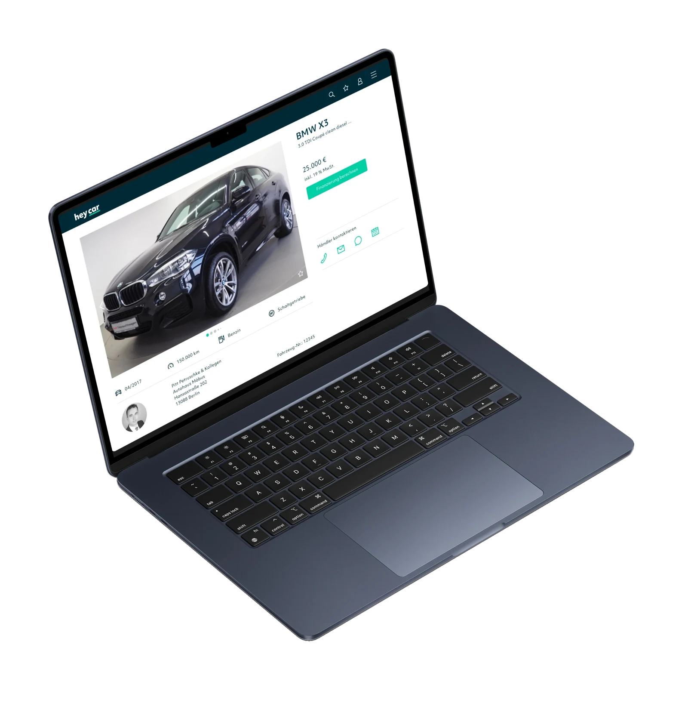
Nº 06 · Case study
heycar
heycar makes buying a second-hand car simple, fair and transparent.
01 · Brief
Buying a second-hand car feels like a minefield. Dealers are opaque, there’s no way to judge quality, and financing only gets harder. heycar started as a pitch concept and became two years of shipping product.
02 · Outcome
heycar launched in Germany and quickly became one of the leading platforms for quality second-hand cars. In the UK, the pitch we designed sold the project. The platform has since expanded across multiple European markets.
03 · The challenge
The challenge.
During our research we identified 4 major pain points in the buying process:
- Buyers often feel overwhelmed when buying a second-hand car
- They often feel inadequate to judge whether a car is a good buy
- They find it difficult to bargain for a good price
- It's difficult to get good financing for second-hand cars
With heycar we aimed to make the buyer more confident when it comes to buying a second-hand car.
04 · What I did
What I did.
I was involved from day one. The concept that won the pitch with Volkswagen Financial Services was a team effort, and I pitched its design. After that, I delivered the financing calculator and the dealer portal for the Germany launch.
After heycar Germany, I led the design team on the UK pitch. The audience and the regulations were different, but the goal was the same: make buying a second-hand car feel trustworthy.
05 · Ideation
Ideation.
During the ideation phase we brainstormed features that would make buying a car simpler. I created wireframes for these features, which we then tested with users.
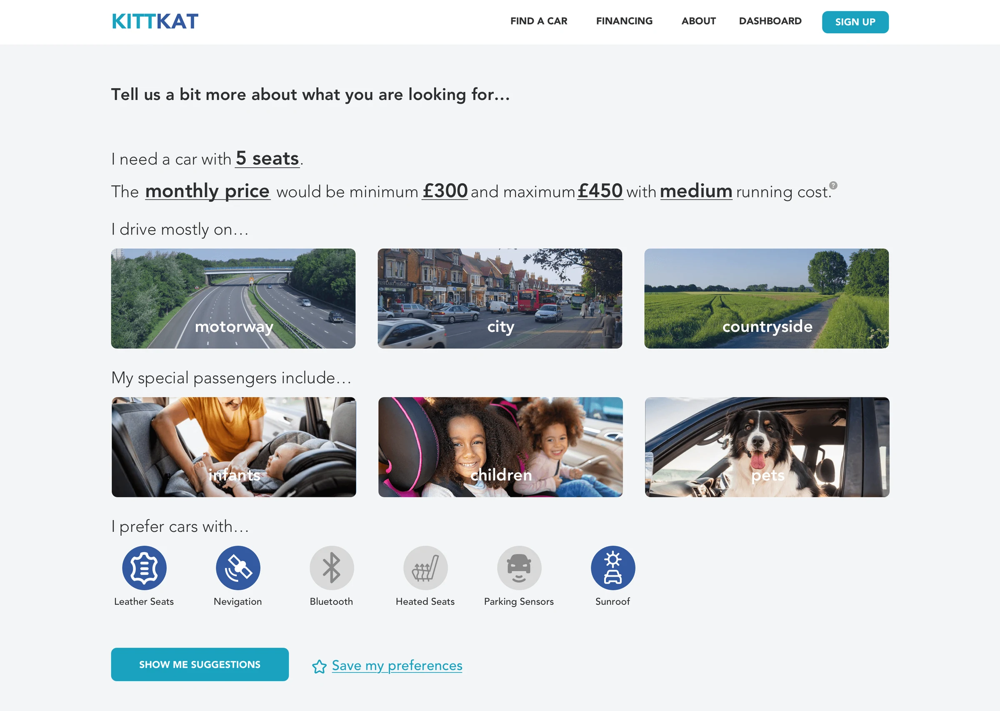
01 / 05
Simplify the search
Reducing the number of options the user can choose from reduces the cognitive load.
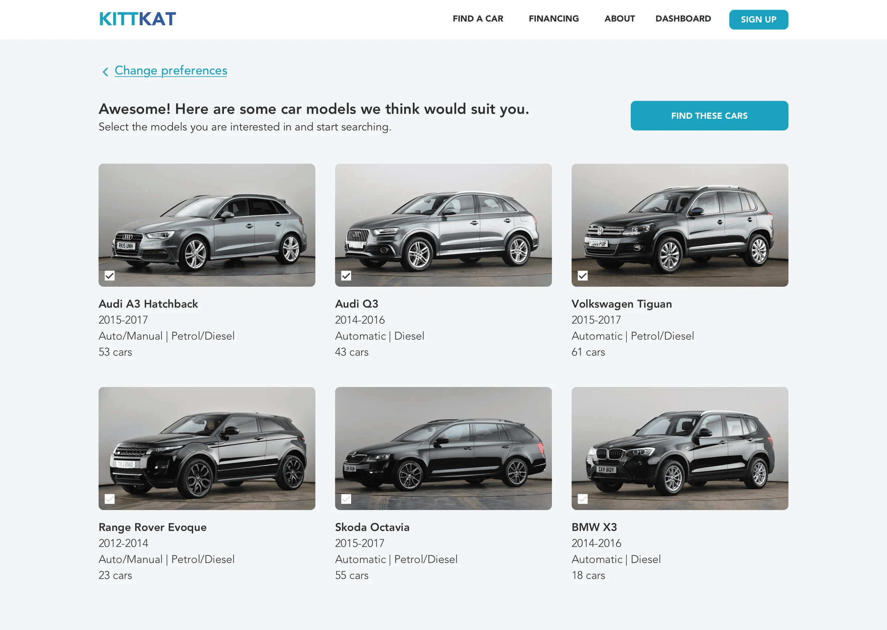
02 / 05
Provide a list of suitable models
Based on the option the user picks, we show them a list of suitable cars to choose from.
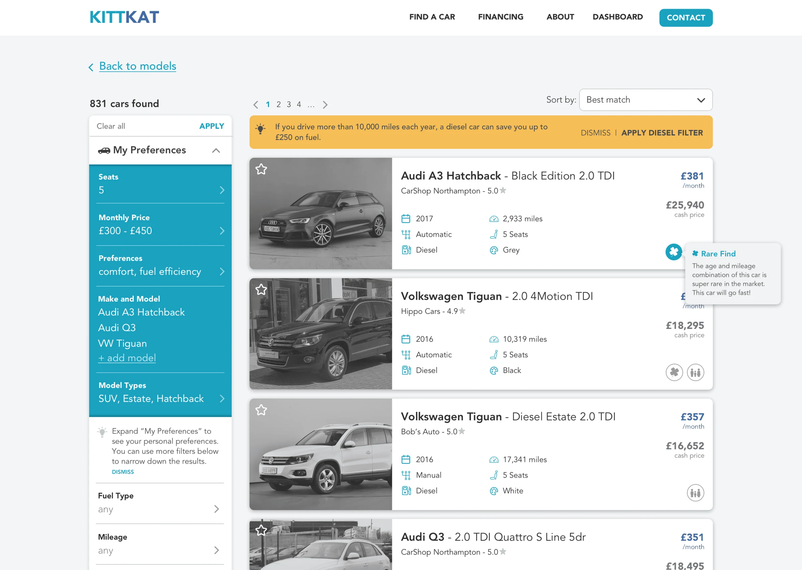
03 / 05
Contextual tips
Providing the buyer with contextual tips will give them confidence to find the right car for them.
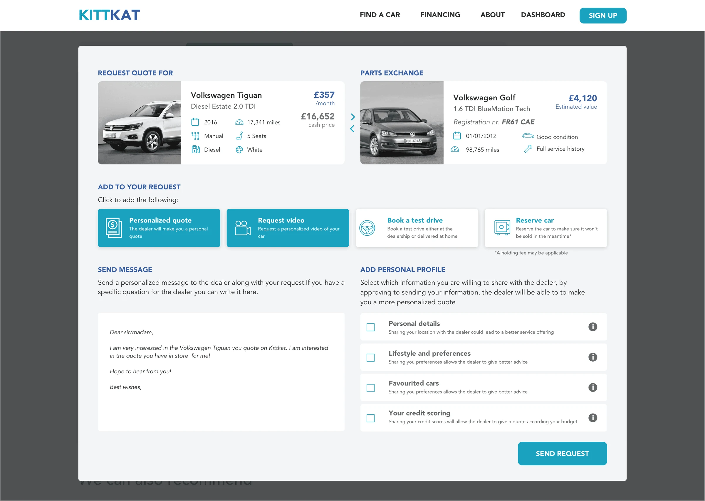
04 / 05
Connect with dealership
Buyers can connect with a dealership beforehand to request a personalised quote, request a video or book a test drive.
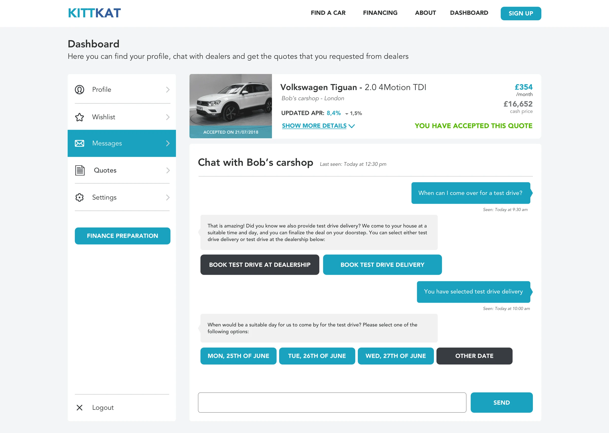
05 / 05
Message dealership
Message the dealership to bargain the price beforehand or make an appointment for a test drive.
06 · Key decisions
Key decisions.
Three questions instead of a filter panel
Every other car site leads with an overwhelming filter panel: make, model, year, price, mileage. We replaced it with three adaptive questions based on how much the buyer already knows. That reduced the cognitive load significantly in testing and got buyers to the right cars faster.
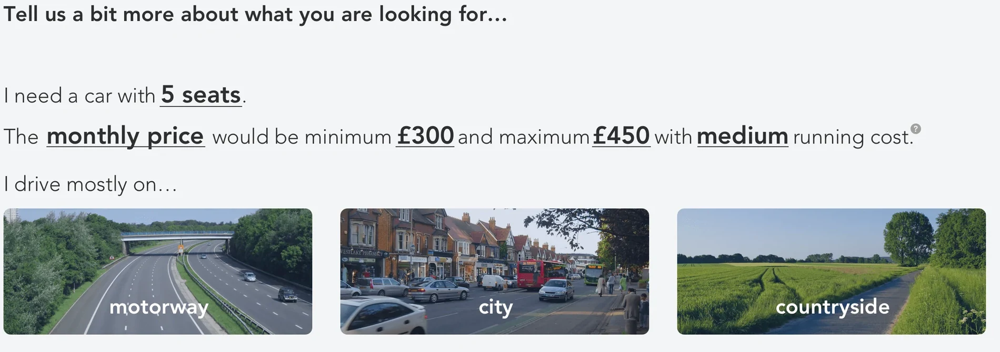
Three questions instead of five filters Contextual tips over permanent tooltips
Buyers felt inadequate judging car quality, and permanent help text gets ignored. So we surfaced specific tips based on context. A quality check tip appeared on the car detail page, a financing tip on the financing step. That way each tip is relevant at the right moment and invisible otherwise.
07 · Final designs
Final designs.
Financing calculator
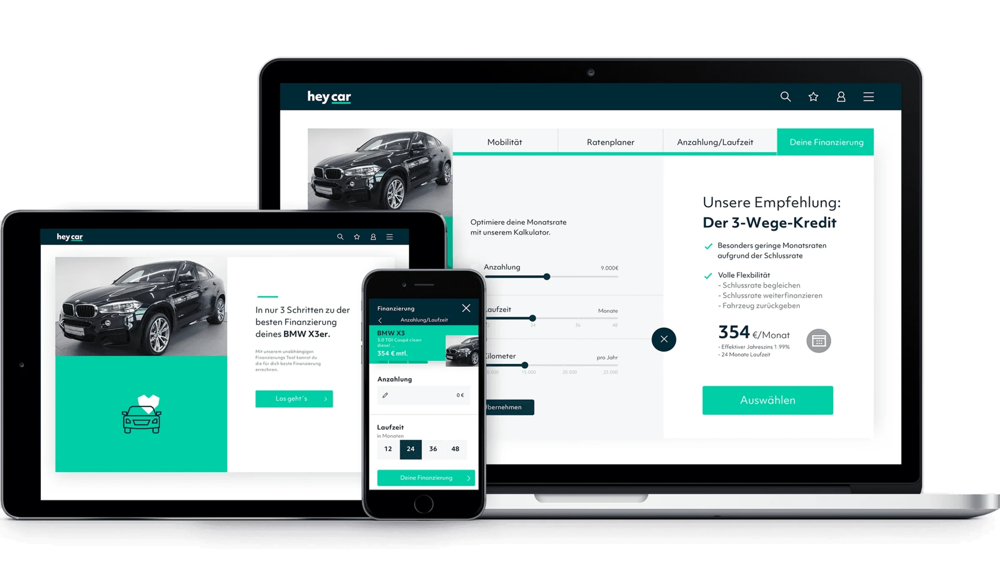
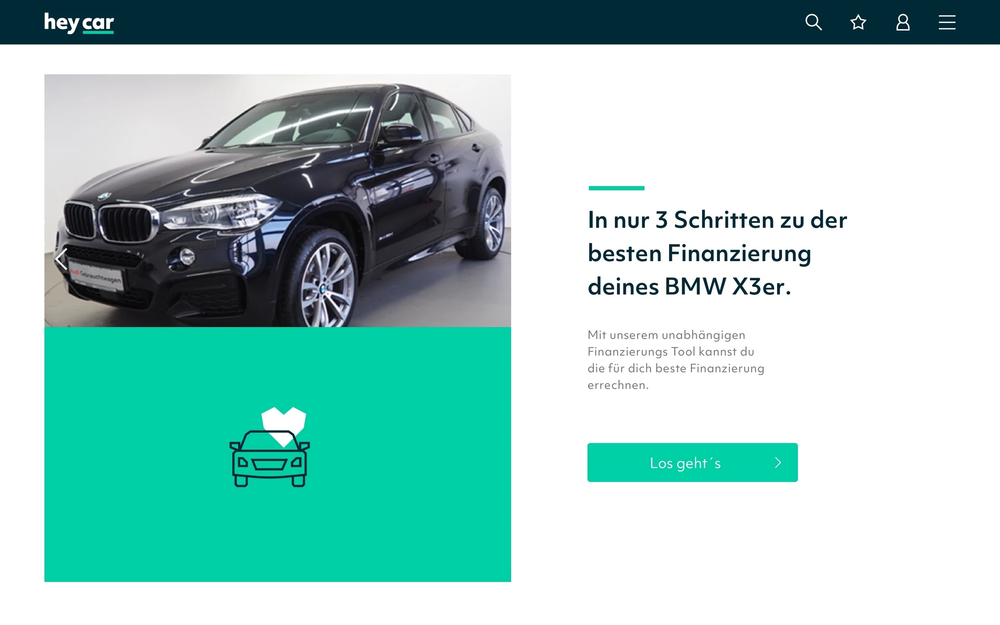
01 / 07 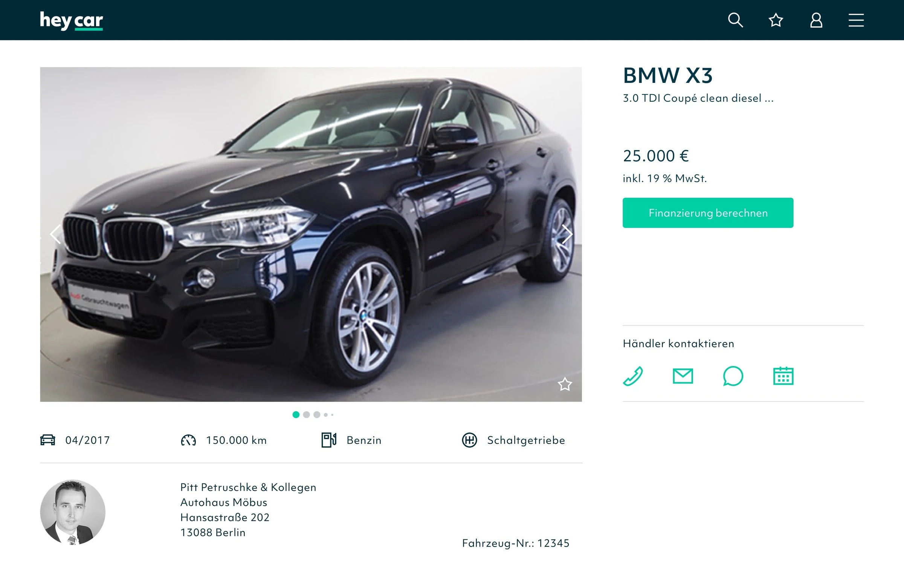
02 / 07 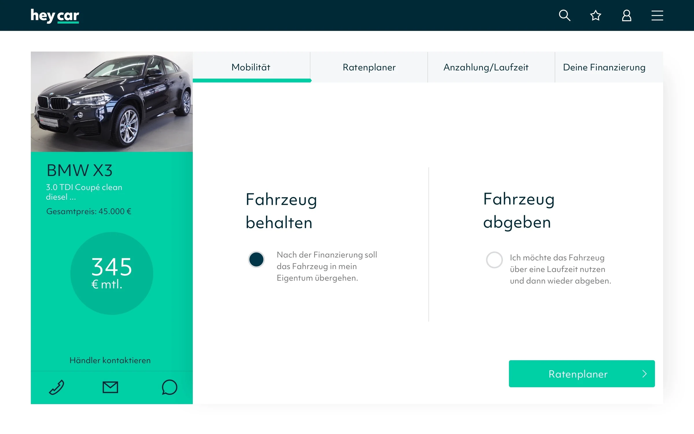
03 / 07 Mobilität 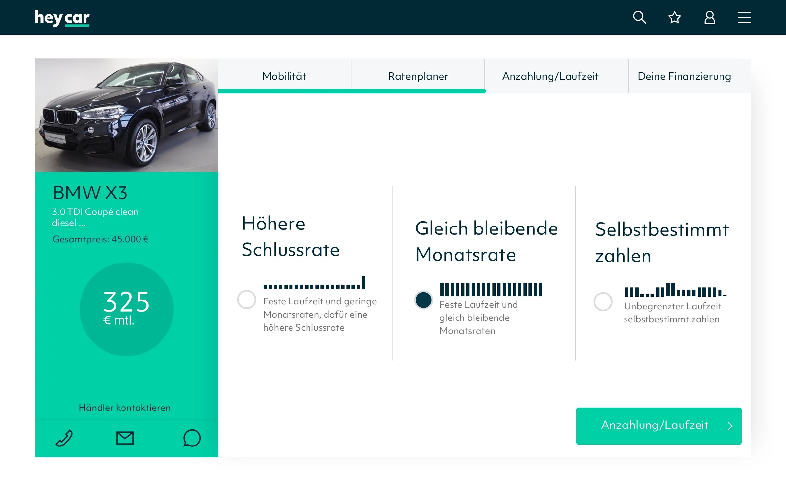
04 / 07 Ratenplaner 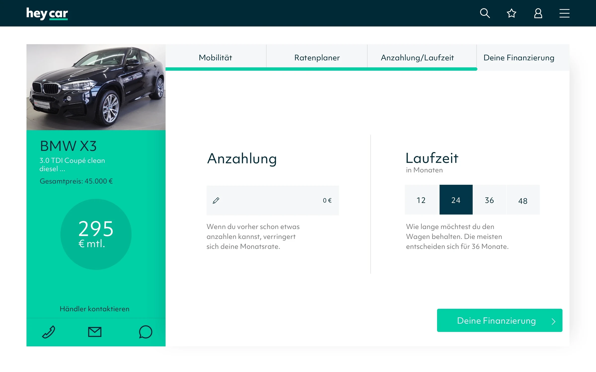
05 / 07 Anzahlung/Laufzeit 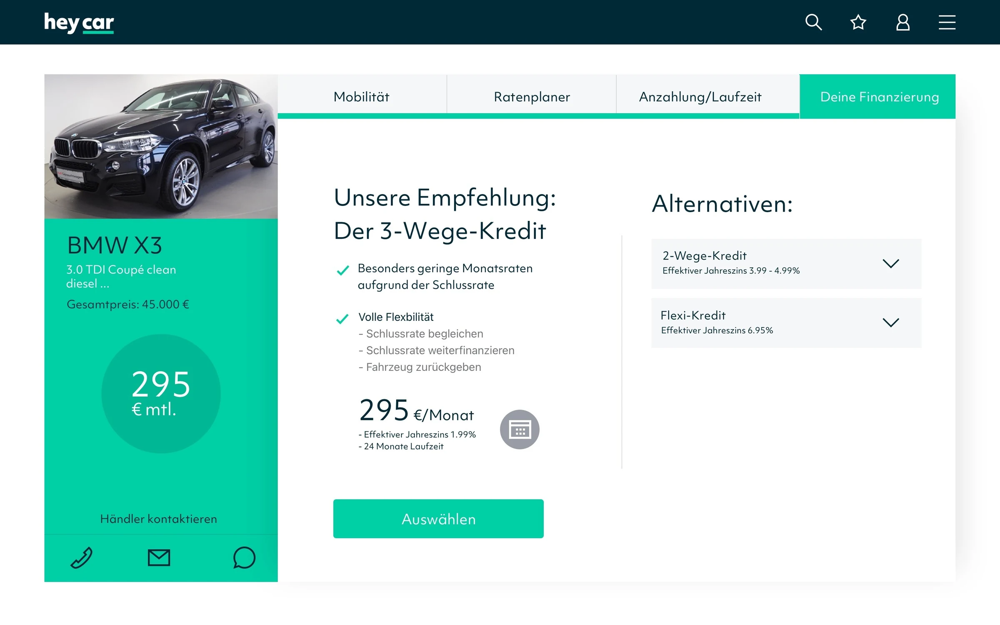
06 / 07 Deine Finanzierung 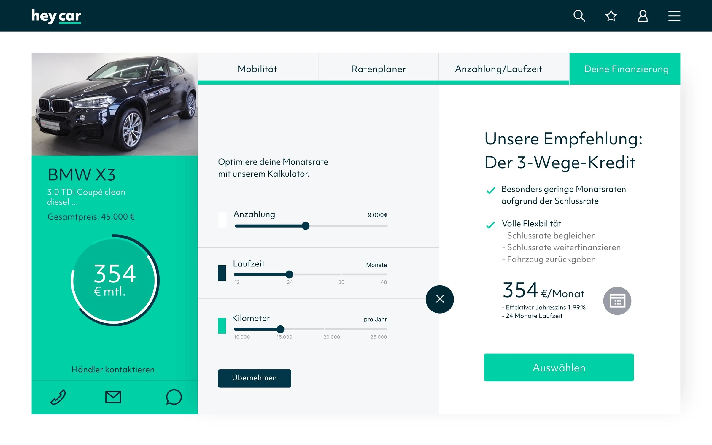
07 / 07 Deine Finanzierung